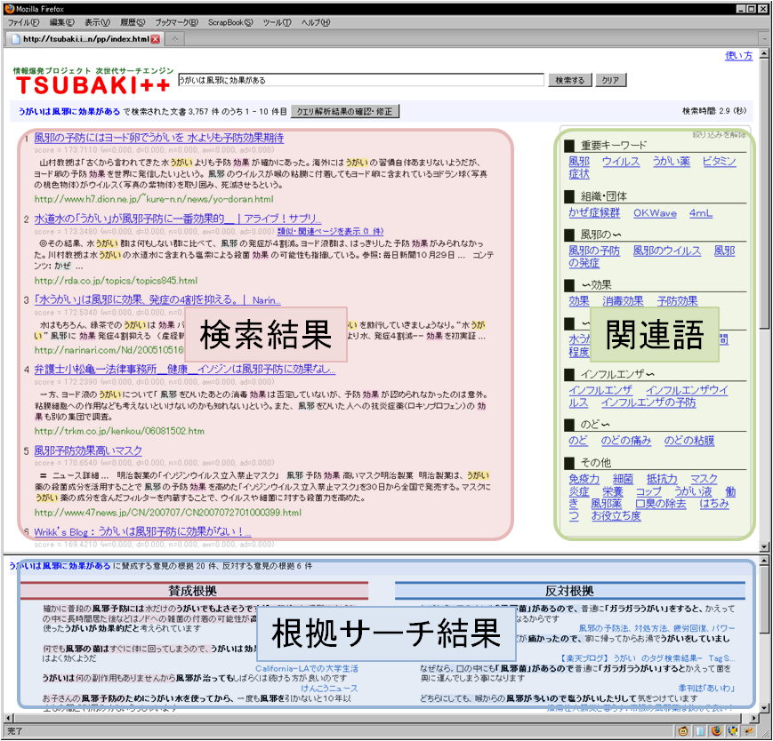
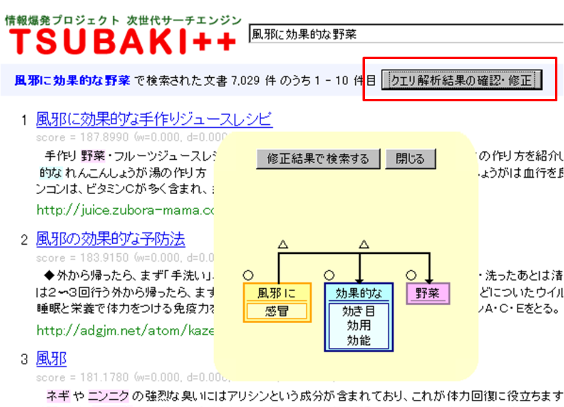
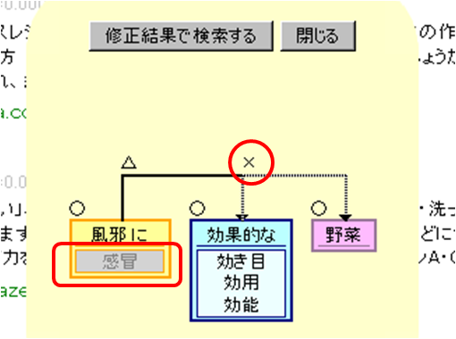
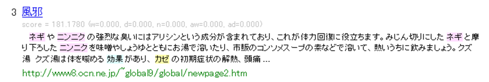
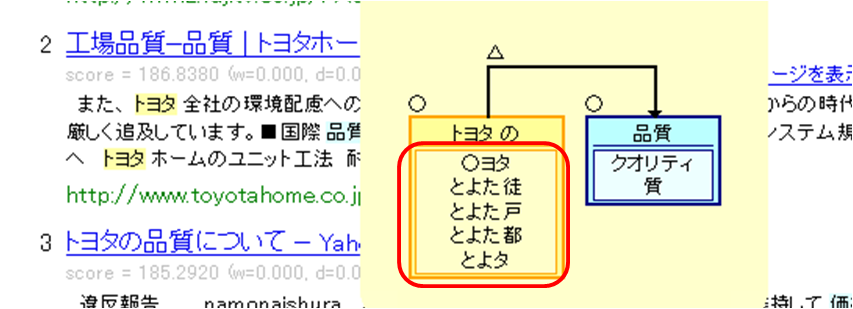
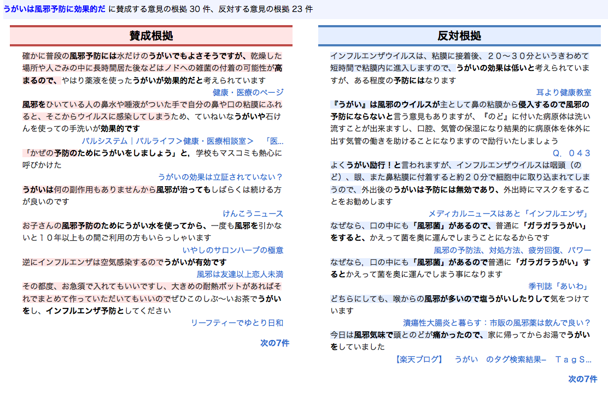

TSUBAKI++ ― 高度言語処理に基づく情報検索・分析 ―
システム概要
TSUBAKI++は表現の違いを気にせずに自然文でウェブ情報を検索することができる新しい検索エンジンです．検索対象は，2010年12月に収集した日本語ウェブページ約1億件です（そのため今年の話題は検索できません）．検索は，1回当たり数秒程度かかります．また，混雑時は，その旨を伝えるメッセージが出力されます．その際は，お手数ですが，時間を置いてから再度検索をお願い致します．
TSUBAKI++が得意とするのは，企業のトップページなどを探すような検索ではなく，「風邪に効く野菜」「乳児の虫歯を防ぐには」「インドの経済発展の障害」のように，あるトピックに関する情報を調べたいという場合です．TSUBAKI++は自然文クエリを柔軟に解釈します．例えば「風邪に効く野菜」で検索した場合，「風邪」と「効く」の修飾関係や，「風邪」と「カゼ」「感冒」の同義関係、「ネギ」と「野菜」の上位下位関係が考慮され，「ネギの効能は風邪」と書かれているページでも検索することができます．

TSUBAKI++の検索結果画面は3つの要素からなります．各要素については以下の説明をご覧ください．
使い方
使い方はYahoo!やGoogleなどの検索エンジンとほとんど同じです．下図のように検索窓に検索クエリを入力し，キーボードの Enter キーを押すか，[検索する] ボタンをクリックします．
TSUBAKI++ では検索クエリとしてキーワードだけでなく自然文も受け付けることができます．この点はTSUBAKI++の特徴の一つですので，是非，自然文クエリを入力してみて下さい．[検索する] ボタンをクリックしてから，数秒で検索結果画面が出力されます．検索結果中の [クエリ解析結果の確認・修正] ボタンを押すことで下のような検索クエリの解析結果修正ウィンドウが表示されます（されない場合は javascript をオンにして下さい）．

黄色，青，ピンクのボックスは語・句を表しており，同じボックス内の語・句（図の例で言えば，風邪と感冒など）はTSUBAKI++が同義語・句[1]として認識したものです．TSUBAKI++は「風邪」に加えこれらの語句も検索に利用します（「効果的」についても同様で，「効用」や「効能」を検索に利用します）．また、同義語に加え各語の下位語も検索に利用します．これにより「ネギは風邪に効く」などの表現を含むページも検索されます．また，ボックスとボックスを結ぶ矢印は語句の修飾関係を表しており，TSUBAKI++では，クエリの修飾関係と同じ修飾関係を持つ表現を含むページを重要なページとして認識します．
ボックスや矢印の上にある「○」「△」「Ｘ」はTSUBAKI++がその語句，修飾関係を検索でどのように利用したかを表しています．各マークの意味は以下の通りです．
- ○：
- 検索結果中のウェブページに必ず含まれていなければならない
- △：
- 検索結果中のウェブページに含まれていた方が好ましい（含まれていなくても良い）
- Ｘ：
- 検索に利用しない
基本的には語句は○，修飾関係は△ですが，クエリによっては語句であっても△，係り受けであっても○として扱われることもあります．
各語、係り受け関係の検索での利用方法は、クエリ解析結果確認・修正ウィンドウより変更可能です．ウィンドウを開き、編集したい語、係り受けのマークをクリックして下さい。
○△Ｘにマークが変更されます．以下の図は、修正ウィンドウにより、風邪の同義語感冒、効果的から野菜への係り受け関係の重要度を変更した画面です．この後、[修正結果で検索する]
を押すとことで、修正結果を反映した検索が実行されます．

次に検索結果の見方です。検索結果1件につき、順位、ページタイトル、スニペット[2]、URL、キャッシュURLが表示されます。
タイトルをクリックするとTSUBAKI++が収集した当時のページに、URLをクリックすると現在のページにアクセスすることができます。
スニペットでは入力されたクエリの語句およびその同義語、下位語とマッチする単語がハイライト表示されます。

[1]: TSUBAKI++では「子ども」と「子供」、「大根」と「ダイコン」のような表記のゆれも同義と見なされます。
[2]: 検索クエリ内の語句が含まれるテキストの抜き書きのこと。
隠語検索機能
「トヨタ」や「ソフトバンク」などの名称に対しては，検索の際に「○ヨタ」や「Sフトバンク」のような隠語が自動的に考慮されます．
これによりインターネット上の掲示板やブログに書かれた評判情報では，
正式名称ではなく隠語が使われることがあるため，隠語を
使って検索するとこれらの評判情報を検索しやすくなることが
あります．

関連語蒸留機能
入力されたクエリの検索結果をクラスタリングし、情報を集約して画面の右側に表示します。この機能を使うことにより、クエリに関する情報の全体像を把握することができます。
画面の右に重要な概念（ラベル）が表示され、ラベルをクリックすることで、検索結果がラベルを含む文書に絞り込まれます。
根拠サーチ機能
Web上には膨大な情報が存在し，ある事柄について様々な意見が述べられていますが，
それらの全ての情報をユーザーが把握することは困難です．
根拠サーチは，ある知りたい事柄について自然文クエリで入力すると，
関連する内容について述べられている文を検索し，それぞれの文が賛成しているか，反対しているかを分類します．
そして，それぞれの意見の根拠に対応する部分を認識し，提示することで，
ユーザーがどの情報を信じれば良いかという判断の支援をします．
自然文クエリを入力すると，下のフレームに根拠サーチの結果が表示されます．
賛成意見は左側，反対意見は右側に表示され，それぞれの意見の根拠部分がハイライトされます．
例えば，「うがいは風邪予防に効果的だ」という自然文クエリで検索すると，
「インフルエンザは空気感染するので（うがいが有効）」などのクエリに対する賛成意見の根拠や，
「風邪のウイルスが主として鼻の粘膜から侵入するので（風邪の予防にならない）」のような反対意見の根拠部分がハイライトされ，
ある事柄に関する賛成意見と反対意見それぞれの根拠情報を俯瞰することができます．
